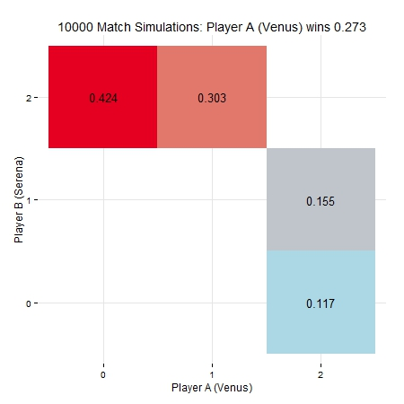

These are the help pages for the R package servevolleyR, a package to simulate tennis points, games, tiebreaks, sets and matches, using the probability that a server will win a point on their first serve.
To install and load the package (devtools must be installed first):
devtools::install_github("durtal/servevolleyR")
library(servevolleyR)A number of functions have print, summary and plot methods, these can be seen on the individual function home pages
| function | about | link |
|---|---|---|
| simPoint | simulate a point | simPoint |
| simGame | simulate a game | simGame |
| simTiebreak | simulate a tiebreak | simTiebreak |
| simSet | simulate a set | simSet |
| simMatch | simulate a match | simMatch |
| simGames | simulate many games | simGames |
| simSets | simulate many sets | simSets |
| simMatches | simulate many matches | simMatches |
| simDf | convert simulated results into a dataframe | simDf |
The plot below is an example from using the plot method for simMatches
